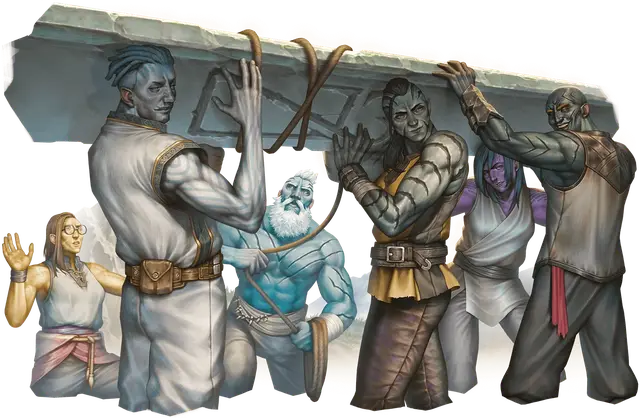

Голиаф
Goliath

Тип существа Гуманоид
Размер Средний (рост около 7-8 футов)
Скорость 35 футов
Возвышающиеся над большинством народов голиафы — отдалённые потомки великанов. Каждый голиаф обладает благоволением первых великанов. Оно проявляется в различных сверхъестественных дарах, включая способность быстро увеличиваться в размерах, временно приближаясь к росту гигантских сородичей голиафов.
Голиафы обладают физическими аспектами, напоминающими их предков-великанов. Так, некоторые голиафы выглядят как каменные великаны, а другие схожи с огненными великанами. Каких бы великанов они не считали родственниками, голиафы проложили свой собственный путь по мультивселенной — не обременённый междоусобными конфликтами, которые веками опустошали род великанов — и стремятся к высотам, превышающим те, что достигли их предки.
Особенности
Вы обладаете следующими особенностями вида:
Наследие великанов. Вы произошли от великанов. От ваших предков вы получили сверхъестественный дар. Выберите одну из следующих особенностей; вы можете использовать выбранную особенность количество раз, равное вашему Бонусу владения, и вы восстанавливаете потраченные использования по завершению Долгого отдыха:
Облачная прогулка (Облачный великан). Бонусным действием вы можете магическим образом телепортироваться на расстояние до 30 футов в видимое вами незанятое пространство.
Огненный ожог (Огненный великан). Когда вы попадаете по цели броском атаки и наносите ей урон, можете также нанести этой цели 1к10 урона Огнём.
Морозный иней (Ледяной великан). Когда вы попадаете по цели броском атаки и наносите ей урон, можете также нанести этой цели 1к6 урона Холодом и уменьшить её Cкорость на 10 футов до начала вашего следующего хода.
Обрушение холма (Холмовой великан). Когда вы попадаете по цели броском атаки и наносите ей урон, можете дать цели состояние Опрокинутый, если она Большого размера или меньше.
Выносливость камня (Каменный великан). Когда вы получаете урон, можете Реакцией бросить 1к12; добавьте к результату ваш модификатор Телосложения и уменьшите урон на эту сумму.
Грохот бури (Штормовой великан). Когда вы получаете урон от существа в пределах 60 футов от вас, можете Реакцией нанести этому существу 1к8 урона Звуком.
Большая форма. Начиная с 5-го уровня персонажа, вы можете Бонусным действием изменить свой размер на Большой, если вы находитесь в достаточно большом пространстве. Это преобразование длится 10 минут или до тех пор, пока вы не окончите его (действий не требуется). Пока оно длится, вы совершаете с Преимуществом проверки Силы, а ваша Скорость увеличивается на 10 футов. Как только вы используете эту особенность, вы не сможете сделать это снова, пока не завершите Долгий отдых.
Мощное телосложение. Вы совершаете с Преимуществом проверки характеристик на окончание состояния Схваченный. Вы также считаетесь существом на один размер больше для определения вашей грузоподъёмности.